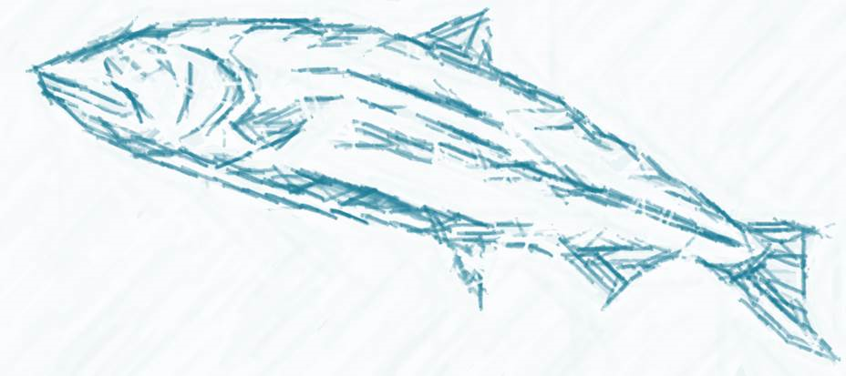
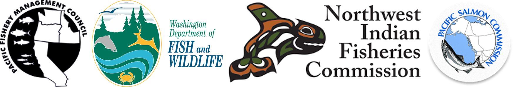
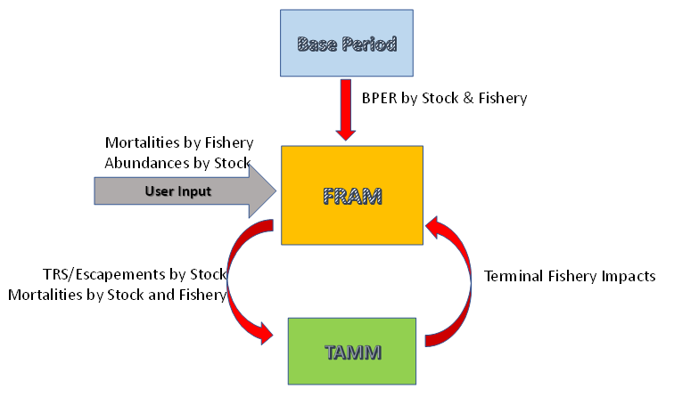

The Fishery Regulation Assessment Model (FRAM) is an accounting tool for estimating the impacts of proposed fisheries on Chinook and Coho salmon stocks during a fishing season. FRAM is a computer program developed and used by:

FRAM is used by the Pacific Fishery Management Council (PFMC), Washington salmon TAMM are shared, discussed, and agreed-to by salmon co-managers (Washington Department of Fish and Wildlife; Western Washington Treaty Indian Tribes), and the Pacific Salmon Commission (coho only) to estimate the annual impacts of proposed or completed ocean and terminal fisheries on Chinook and coho salmon stocks. The Chinook version evaluates impacts on most stock groups originating from the California Central Valley (Sacramento River), north-central Oregon coast, Columbia River, Willapa Bay, north Washington coast, Puget Sound, and southern British Columbia. The coho version evaluates impacts on a comprehensive set of stocks originating from Central California to Southeast Alaska and is considered to represent total West Coast production. FRAM results are used to examine the impacts of proposed fisheries within a single management year for compliance with management objectives, allocation arrangements, Endangered Species Act (ESA) requirements, and domestic and international legal obligations.
Various FRAM outputs inform the compliance of proposed fisheries with conservation and management objectives.
This site includes technical background information and a user guide focused on running the FRAM application, modifying model inputs, and obtaining and interpreting model outputs.
FRAM is a deterministic, discrete, time-age structured model designed to aid planning of Chinook and Coho salmon fisheries. It is designed to address the effects of multiple mixed-stock fisheries on individual stocks, each further stratified by age and mark status (and possibly hatchery origin). The model calculates fishery related mortality, including catches and non-landed impacts, imposed on the abundance of each stock unit.
In a given yearly run, over the course of several time steps, FRAM allocates a mixed stock cohort to catches, non-retention mortality and escapement (for Coho) or escapement to the terminal area (for Chinook). This occurs by combining forecasted or observed stock run sizes and fishery practices with parameters calibrated from observations made during a fixed “base period” set of baseline years. The base period integrates fishery catches, stock age and mark composition information, and coded wire tag (CWT) recovery data to produce a calibrated reference pattern of stock distributions and stock-specific harvest rates by time-step and fishery.
A fundamental element of FRAM calculations are the stock-age-fishery-timestep specific exploitation rates (defined as the total mortality divided by abundance, itself the sum of mortality and escapement). This expression of catch as a proportion of the available abundance is based primarily on coded wire tag release and recovery data from the Regional Mark Information System (RMIS). The Chinook base period was recently updated with CWTs from catch years 2007 – 2013 (brood years 2005 – 2008), and has continued to see revision with ongoing data quality improvements. The Coho base period is comprised of CWTs from catch years 1986 – 1992.
FRAM is an empirically fit tool that uses the past to inform a representation of the future. Over time, algorithms have been added or adapted to capture changing management options, and the development platform of the application has evolved, but the basic structure remains much the same as when it was conceived in the late 1970’s.
In the mid-1970s, treaty fishery rights litigation, and the associated legal obligation for the states of Washington and Oregon to provide Treaty Tribes with the opportunity to harvest specific shares of individual runs, introduced a need for a quantitative tool to project the impact of proposed salmon fisheries at the stock-specific level. Other legal issues, such as the Magnuson-Stevens Fishery Conservation and Management Act and the Law of the Seas convention, contributed to the need to improve assessment tools. These considerations provided the impetus to develop early salmon fishery assessment models using the information available from the coast wide CWT program.
In the late 1970s, the Washington Department of Fisheries (WDF) and U.S. National Bureau of Standards (NBS) developed a model for evaluating alternative fishery regulatory packages that was coded in FORTRAN and ran on a mainframe computer at the University of Washington. The WDF/NBS Model could be configured for either Chinook or Coho by using different input data files. This WDF/NBS model was not extensively used by the PFMC because it proved costly to operate and results were difficult to obtain in a timely manner. Morishima and Henry (2000) provide a more in-depth history of Pacific Northwest salmon management and fishery modeling.
In the early 1980s, the development of personal computers allowed for the WDF/NBS model to be converted into simple spreadsheet models. This transformation improved accessibility to the model during the PFMC preseason planning processes. The first spreadsheet model for Chinook used by the PFMC was developed in the mid-1980s to model Columbia River “tule” fall Chinook. The corresponding spreadsheet model for Coho, the Coho Assessment Model (CAM), covered stocks from the Columbia River, Puget Sound, and Washington and Oregon coastal areas. The CAM was revised over time, principally to improve report generation capabilities and provide more detailed information for managing terminal area fisheries in Puget Sound using Terminal Area Management Modules (TAMMs). The CAM was used as the primary model for evaluating Coho impacts for proposed PFMC fisheries until the mid-1990s.
The increased complexity of proposed fishery regulation regimes, along with the need for increased time and spatial resolution for impact projections, soon surpassed the capability of the spreadsheet models. In the mid-1990s, CAM was programmed in QUICK BASIC and renamed FRAM. The recognition that common algorithms underlie both the Coho and Chinook spreadsheet models led to the effort to develop the QUICK BASIC version of FRAM for both species. The FRAM code could be used to evaluate proposed fishery regulation regimes for either Chinook or Coho by using different input file configurations. In 1998, FRAM was converted to VISUAL BASIC to take advantage of the improved user interface available through the MS-WINDOWS operating system. A multi-agency Model Evaluation Subgroup periodically reviewed model performance and parameter estimation methods and coordinated revisions to the model during this period (1998-2000).
A new version of FRAM was introduced in 2012. It was coded by James Packer (WDFW) in VISUAL STUDIO.NET and uses an MS Access database rather than binary text files for data storage and retrieval. In 2017, additional software changes were implemented when an updated Chinook base period was adopted using brood year 2005-2008 CWTs. Substantial changes were made to the calibration programs, modeling of sublegal encounters, growth estimation, imputing CWT recoveries for stocks and fisheries with few or no CWTs, handling mark-selective fisheries, and developing model stock proportions.
Although some program subroutines are shared, Chinook and Coho are processed separately, with distinct time step divisions, stocks, and fisheries. The Chinook version evaluates impacts on most stock groups originating from the California Central Valley (Sacramento River), north-central Oregon coast, Columbia River, Washington coast, Puget Sound, and Southern British Columbia. However, not all stocks along the West Coast of North America are represented in Chinook FRAM. Some of the stocks that are not represented in Chinook FRAM include any stock in California except Sacramento Falls, Oregon stocks originating south of Elk River, Mid and Upriver Columbia River Springs, Snake River Springs, and Canadian stocks originating north of Georgia Strait. The Coho version evaluates impacts on a comprehensive set of stocks originating from Central California to Southeast Alaska and is considered to represent total West Coast production.

Figure 1. Simplified interactions between the Base Period, FRAM, and TAMM (TRS: Terminal Run Size, BPER: Base Period Exploitation Rates)
In addition to FRAM, the modeling of fishery impacts for Puget Sound Chinook stock units requires a TAMM. When FRAM is run without TAMM, it will be missing accurate estimates for terminal and freshwater fisheries. The Chinook TAMM passes stock and fishery inputs to FRAM. Subsequently, FRAM modeling returns output to the TAMM, which then performs additional calculations before generating reports. The Coho TAMM functions to pass Puget Sound fishery inputs to FRAM, to perform additional calculations for Washington coastal and Columbia River fisheries/stocks, and to generate reports from FRAM output. Thus, the use of both FRAM and TAMM is generally necessary for both Chinook and Coho modeling.
The FRAM base period is developed by summarizing coded-wire-tag information from RMIS from a continuous time period with a sufficient number of CWT releases and recoveries. The current base period uses brood year releases from 2005-2008 for Chinook and 1986-1992 for coho. A calibration program written in VisualBasic.net maps the CWTs to FRAM fisheries, stocks, and time steps and conducts a cohort reconstruction to estimate exploitation rates and other parameters, such as base period cohort sizes. These estimates form the basis of a FRAM run and remain static between model runs. Using these base period parameters allows FRAM to predict the stock composition, exploitation rates, and escapements of future fisheries when provided with forecasts of abundance and fishery mortalities.
While there is only one FRAM program that handles both Chinook and Coho model runs and many of the core processes and algorithms are identical, this document presents the model and computational structures independently for each species. This decision was made in an effort to improve readability and clarity, as there are a variety of unique features specific to each species that can be difficult to differentiate when they are presented together.
Table 1. Feature Components of Chinook and Coho FRAM
| Description | Chinook | Coho |
|---|---|---|
| Number Stocks | 78 | 246 |
| Number Fisheries | 73 | 198 |
| Time Steps | 4 | 5 |
| Ages | Age 2-5 | Age 3 |
| Maturation | Yes | No |
| Sublegals | Yes | No |
| Adult Equivalents | Yes | No |
| Size Limit Modeling | Yes | No |
| Growth Modeling | Yes | No |
| Time Period | October (yr-1) - April (yr+1) | January - December |
| Mark Selective Fishery Bias Correction | No | Yes |
| BkFRAM | Starts with terminal run size | Starts with escapement |
| Stocks | Major stocks affecting PFMC and Washington fisheries | All stocks |
| Fisheries | Major marine fisheries affecting PFMC and Washington stocks | All fisheries |
| Areas | Marine | Marine and Freshwater |
| Model Stock Proportion (accounting for non-model stocks) | Yes | No |
| Post-fishing Abundance reported to TAMM | Marine escapement | Escapement |
| Forecast Units | Mainly terminal run size | Ocean age-3 (majority) |
| Flexible Terminal Run Size Definitions | No | Yes (TAAETRSList table) |